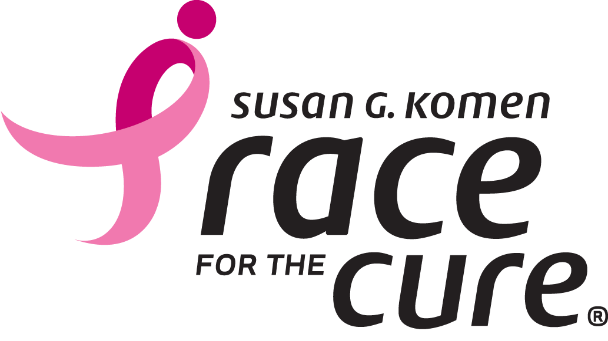

At Susan G. Komen, our mission is pretty simple: to save lives and end breast cancer forever. How we do it…well, that’s a bit more complex. We educate, support research, offer grants that provide financial and emotional assistance and advocate for better breast cancer policy. But in a broader sense, we empower others, ensure quality care for all, and invest in science to find the cures.
Since 1982, we’ve contributed to many of the advances made in the fight against breast cancer. We’ve transformed how the world treats and talks about this disease and have helped turn millions of breast cancer patients into breast cancer survivors.